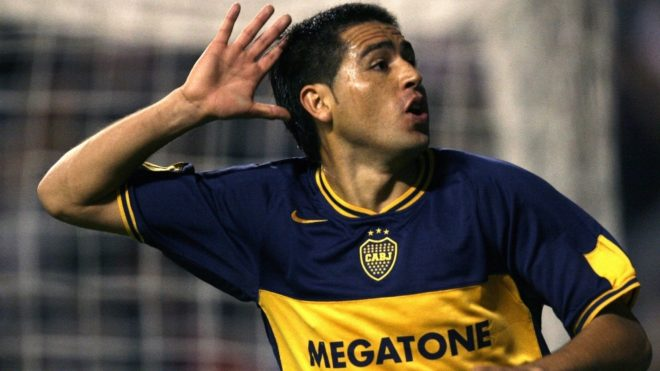
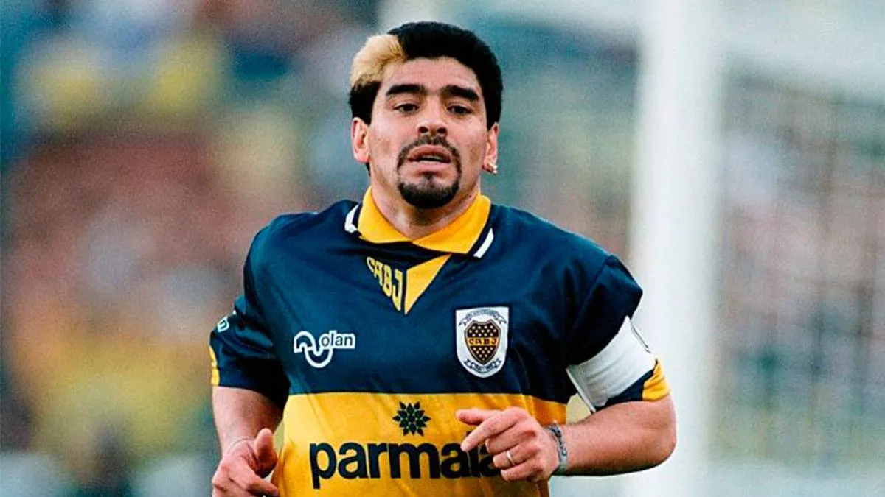

Idolos
Los mejores jugadores de la historia del club
Juan Roman Riquelme
Acaso unos de los mejores -sino el mejor- jugadores que vistieron la azul y oro. Tres Libertadores, una intercontinental y seis títulos locales, además de su carisma, su excelsa calidad y su calidad de hincha, lo avalan para ser el número uno.
Martin Palermo
Con 236 tantos, es el goleador histórico del club, símbolo de una época y uno de los jugadores con más títulos. Martín se metió para siempre en el corazón del hincha gracias a sus infinitos goles en finales, Superclásicos y partidos importantes.
Sebastian Battaglia
El sucesor de Rattín. Jugó casi toda su carrera con la camiseta de Boca -excepto su breve paso por Villarreal- y es el jugador más ganador de la historia del club: tiene 19 títulos en su haber.
Angel Clemente Rojas
Producto de las inferiores de Boca, fue símbolo de la década del 60' por su tremenda habilidad. Algunos memoriosos aún lo destacan como uno de los mejores jugadores que salieron del club.
Diego Armando Maradona
"Yo me inventé mi pase a Boca", dijo alguna vez Diego, años después, cuando le preguntaron cómo se dio su llegada. El mejor jugador de la historia solo ganó un título en el club, pero siempre será recordado por su identificación con los colores.